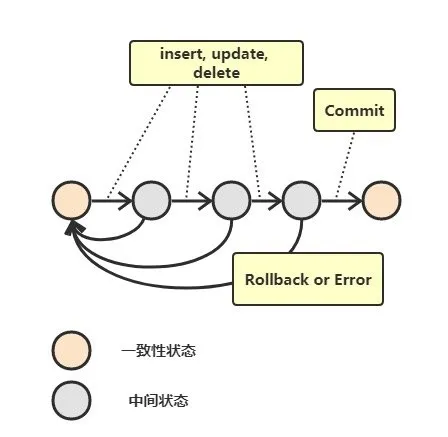
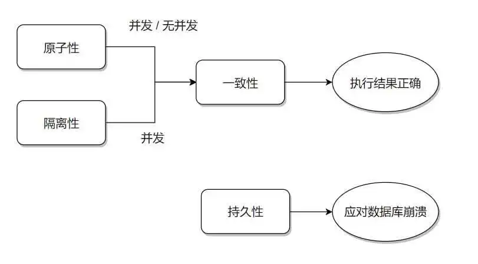
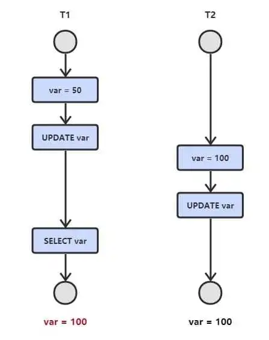
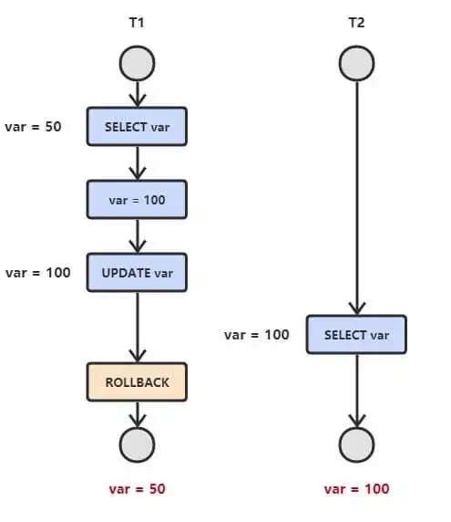
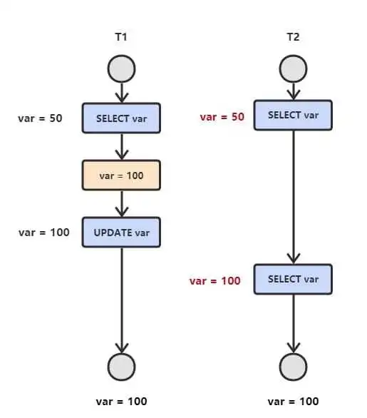
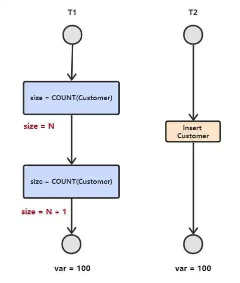
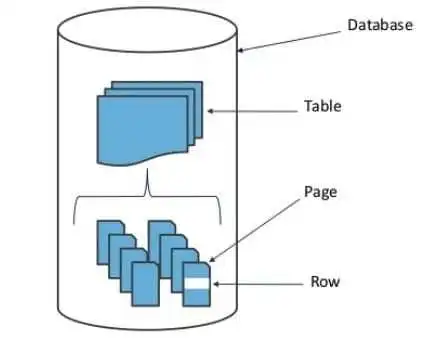
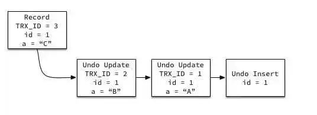

Mysql-006解读事务和MVVC原理
一、事务
概念
事务指的是满足 ACID 特性的一组操作，可以通过 Commit 提交一个事务，也可以使用 Rollback 进行回滚。 
ACID
-
原子性（Atomicity）
事务被视为不可分割的最小单元，事务的所有操作要么全部提交成功，要么全部失败回滚。
回滚可以用回滚日志来实现，回滚日志记录着事务所执行的修改操作，在回滚时反向执行这些修改操作即可。
-
一致性（Consistency）
数据库在事务执行前后都保持一致性状态。在一致性状态下，所有事务对一个数据的读取结果都是相同的。
强一致性、弱一致性、最终一致性：对于关系型数据库，要求更新过的数据能被后续的访问都能看到，这是强一致性；如果能容忍后续的部分或者全部访问不到，则是弱一致性*；如果经过一段时间后要求能访问到更新后的数据，则是最终一致性。*
-
隔离性（Isolation）
一个事务所做的修改在最终提交以前，对其它事务是不可见的。
-
持久性（Durability）
一旦事务提交，则其所做的修改将会永远保存到数据库中。即使系统发生崩溃，事务执行的结果也不能丢失。
SQL Server中使用了WAL（Write-Ahead Logging)，预写日志技术来保证事务日志的ACID特性，在数据写入到数据库之前，先写入到日志，再将日志记录变更到存储器中。
undo日志用于记录事务开始前的状态，用于事务失败时的回滚操作；
redo日志记录事务执行后的状态，用来恢复未写入data file的已成功事务更新的数据。
例如某一事务的事务序号为T1，其对数据X进行修改，设X的原值是5，修改后的值为15，那么Undo日志为，Redo日志为。
梳理下事务执行的各个阶段：
- 写undo日志到log buffer；
- 执行事务，并写redo日志到log buffer；
- 如果innodb_flush_log_at_trx_commit=1，则将redo日志写到log file，并刷新落盘。
- 提交事务。
innodb_flush_log_at_trx_commit=1标识：每次事务提交时，将存储引擎log buffer中的redo日志写入到log file，并调用文件系统的sync操作，将日志刷新到磁盘。
因为data buffer中的数据会在合适的时间 由存储引擎写入到data file，如果在写入之前，数据库宕机了，根据落盘的redo日志，完全可以将事务更改的数据恢复。这种先持久化日志的策略就叫做Write Ahead Log。参考数据库事物如何保证。
事务的 ACID 特性概念简单，但不是很好理解，主要是因为这几个特性不是一种平级关系：
- 只有满足一致性，事务的执行结果才是正确的。
- 在无并发的情况下，事务串行执行，隔离性一定能够满足。此时只要能满足原子性，就一定能满足一致性。
- 在并发的情况下，多个事务并行执行，事务不仅要满足原子性，还需要满足隔离性，才能满足一致性。
- 事务满足持久化是为了能应对数据库崩溃的情况。 
AUTOCOMMIT
MySQL 默认采用自动提交模式。也就是说，如果不显式使用START TRANSACTION语句来开始一个事务(使用COMMIT来提交)，那么每个查询都会被当做一个事务自动提交。
二、并发一致性问题
在并发环境下，事务的隔离性很难保证，因此会出现很多并发一致性问题。
丢失更新
T1 和 T2 两个事务都对一个数据进行修改，T1 先修改，T2 随后修改，T2 的修改覆盖了 T1 的修改。
考虑飞机订票系统中的一个活动序列:
- 甲售票点（甲事务）读出某航班的机票余额A,设A=16.
- 乙售票点（乙事务）读出同一航班的机票余额A,也为16.
- 甲售票点卖出一张机票,修改余额A←A-1.所以A为15,把A写回数据库.
- 乙售票点也卖出一张机票,修改余额A←A-1.所以A为15,把A写回数据库.
结果明明卖出两张机票，数据库中机票余额只减少1。 
读脏数据
T1 修改一个数据，T2 随后读取这个数据。如果 T1 撤销了这次修改，那么 T2 读取的数据是脏数据。即脏读是指读取了事务回滚前的脏数据。 
不可重复读
T2 读取一个数据，T1 对该数据做了修改。如果 T2 再次读取这个数据，此时读取的结果和第一次读取的结果不同。
也就是说，当前事务先进行了一次数据读取，然后再次读取到的数据是别的事务修改成功的数据，导致两次读取到的数据不匹配。 
幻影读
T1 读取某个范围的数据，T2 在这个范围内插入新的数据，T1 再次读取这个范围的数据，此时读取的结果和和第一次读取的结果不同。
或者用更通俗地说，事务A首先根据条件索引得到N条数据，然后事务B改变了这N条数据之外的M条或者增添了M条符合事务A搜索条件的数据，导致事务A再次搜索发现有N+M条数据了，就产生了幻读。
也就是说，当前事务读第一次取到的数据比后来读取到数据条目少。 
幻读和不可重复读的区别：幻读是读到之前没有出现过的数据，不可重复读是同一条数据两次读的结果不一样。不可重复读针对的是update或delete，幻读针对的insert。
产生并发不一致性问题主要原因是破坏了事务的隔离性，解决方法是通过并发控制来保证隔离性。并发控制可以通过封锁来实现，但是封锁操作需要用户自己控制，相当复杂。数据库管理系统提供了事务的隔离级别，让用户以一种更轻松的方式处理并发一致性问题。
三、封锁
封锁粒度
MySQL 中提供了两种封锁粒度：行级锁以及表级锁。
应该尽量只锁定需要修改的那部分数据，而不是所有的资源。锁定的数据量越少，发生锁争用的可能就越小，系统的并发程度就越高。
但是加锁需要消耗资源，锁的各种操作（包括获取锁、释放锁、以及检查锁状态）都会增加系统开销。因此封锁粒度越小，系统开销就越大。
在选择封锁粒度时，需要在锁开销和并发程度之间做一个权衡。 
封锁类型
-
读写锁
这里的读写锁是说行级锁。
- 排它锁（Exclusive），简写为 X 锁，又称写锁。
- 共享锁（Shared），简写为 S 锁，又称读锁。
有以下两个规定：
- 一个事务对数据对象 A 加了 X 锁，就可以对 A 进行读取和更新。加锁期间其它事务不能对 A 加任何锁。
- 一个事务对数据对象 A 加了 S 锁，可以对 A 进行读取操作，但是不能进行更新操作。加锁期间其它事务能对 A 加 S 锁，但是不能加 X 锁。
锁的兼容关系如下：
- X S X x x S x √ -
意向锁
使用意向锁（Intention Locks）可以更容易地支持多粒度封锁。
在存在行级锁和表级锁的情况下，事务 T 想要对表 A 加 X 锁，就需要先检测是否有其它事务对表 A 或者表 A 中的任意一行加了锁，那么就需要对表 A 的每一行都检测一次，这是非常耗时的。
意向锁在原来的 X/S 锁之上引入了 IX/IS，IX/IS 都是表锁，用来表示一个事务想要在表中的某个数据行上加 X 锁或 S 锁。有以下两个规定：
- 一个事务在获得某个数据行对象的 S 锁之前，必须先获得表的 IS 锁或者更强的锁；
- 一个事务在获得某个数据行对象的 X 锁之前，必须先获得表的 IX 锁。
通过引入意向锁，事务 T 想要对表 A 加 X 锁，只需要先检测是否有其它事务对表 A 加了 X/IX/S/IS 锁，如果加了就表示有其它事务正在使用这个表或者表中某一行的锁，因此事务 T 加 X 锁失败。
各种锁的兼容关系如下：
- X IX S IS X x x x x IX x √ x √ S x x √ √ IS x √ √ √ 解释如下： - 任意 IS/IX 锁之间都是兼容的，因为它们只是表示想要对表加锁，而不是真正加锁；
- S 锁只与 S 锁和 IS 锁兼容，也就是说事务 T 想要对数据行加 S 锁，其它事务可以已经获得对表或者表中的行的 S 锁。
封锁协议
1. 三级封锁协议
一级封锁协议
事务 T 要修改数据 A 时必须加 X 锁，直到 T 结束才释放锁。
可以解决丢失修改问题，因为不能同时有两个事务对同一个数据进行修改，那么事务的修改就不会被覆盖。
二级封锁协议
在一级的基础上，要求读取数据 A 时必须加 S 锁，读取完马上释放 S 锁。
可以解决读脏数据问题，因为如果一个事务在对数据 A 进行修改，根据 1 级封锁协议，会加 X 锁，那么就不能再加 S 锁了，也就是不会读入数据。
三级封锁协议
在二级的基础上，要求读取数据 A 时必须加 S 锁，直到事务结束了才能释放 S 锁。
可以解决不可重复读的问题，因为读 A 时，其它事务不能对 A 加 X 锁，从而避免了在读的期间数据发生改变。
2. 两段锁协议
两段锁协议是指所有的事务必须分两个阶段对数据项加锁和解锁。即事务分两个阶段，第一个阶段是获得封锁。事务可以获得任何数据项上的任何类型的锁，但是不能释放；第二阶段是释放封锁，事务可以释放任何数据项上的任何类型的锁，但不能申请。（即在某段时间只能申请锁，在某段时间只能释放锁）
第一阶段是获得封锁的阶段，称为扩展阶段：其实也就是该阶段可以进入加锁操作，在对任何数据进行读操作之前要申请获得S锁，在进行写操作之前要申请并获得X锁，加锁不成功，则事务进入等待状态，直到加锁成功才继续执行。就是加锁后就不能解锁了。
第二阶段是释放封锁的阶段，称为收缩阶段：当事务释放一个封锁后，事务进入封锁阶段，在该阶段只能进行解锁而不能再进行加锁操作。
可串行化调度是指，通过并发控制，使得并发执行的事务结果与某个串行执行的事务结果相同。
事务遵循两段锁协议是保证可串行化调度的充分条件。例如以下操作满足两段锁协议，它是可串行化调度。
lock-x(A)...lock-s(B)...lock-s(C)...unlock(A)...unlock(C)...unlock(B)
但不是必要条件，例如以下操作不满足两段锁协议，但是它还是可串行化调度。
lock-x(A)...unlock(A)...lock-s(B)...unlock(B)...lock-s(C)...unlock(C)
MySQL 隐式与显示锁定
MySQL 的 InnoDB 存储引擎采用两段锁协议，会根据隔离级别在需要的时候自动加锁，并且所有的锁都是在同一时刻被释放，这被称为隐式锁定。
InnoDB 也可以使用特定的语句进行显示锁定：
SELECT ... LOCK In SHARE MODE;SELECT ... FOR UPDATE;
四、隔离级别
为了避免丢失更新、脏读、不可重复读和幻读，在标准SQL规范中，定义了4个事务隔离级别，不同的隔离级别对事务的处理不同。
读未提交（Read Uncommitted）
只处理更新丢失。如果一个事务已经开始写数据，则不允许其他事务同时进行写操作，但允许其他事务读此行数据。事务中的修改，即使没有提交，对其它事务也是可见的。可通过“排他写锁”实现。
读提交（Read Committed）
处理更新丢失、脏读。读取数据的事务允许其他事务继续访问改行数据，但是未提交的写事务将会禁止其他事务访问。也就是说一个事务只能读取已经提交的事务所做的修改。换句话说，一个事务所做的修改在提交之前对其它事务是不可见的。可通过“瞬间共享读锁”和“排他写锁”实现。
可重复读（Repeatable Read）
**处理更新丢失、脏读和不可重复读取。**多次读取同一范围的数据会返回第一次查询的快照，不会返回不同的数据行，但是可能发生幻读（Phantom Read）；
序列化（Serializable）
提供严格的事务隔离。对于同一行记录，“写”会加“写锁”，“读”会加“读锁”。当出现读写锁冲突的时候，后访问的事务必须等前一个事务执行完成，才能继续执行。解决了幻读问题。
参考：数据库四大特性及数据库隔离级别和数据库隔离级别。
| 隔离级别 | 脏读可能性 | 不可重复读可能性 | 幻读可能性 | 加锁读 |
|---|---|---|---|---|
| 读未提交 | √ | √ | √ | × |
| 读提交 | × | √ | √ | × |
| 可重复读 | × | × | √ | × |
| 序列化 | × | × | × | √ |
五、多版本并发控制
多版本并发控制（Multi-Version Concurrency Control, MVCC）是 MySQL 的 InnoDB 存储引擎实现隔离级别的一种具体方式，用于实现提交读和可重复读这两种隔离级别。而未提交读隔离级别总是读取最新的数据行，无需使用 MVCC。可串行化隔离级别需要对所有读取的行都加锁，单纯使用 MVCC 无法实现。
MVCC在大多数情况下代替了行锁。最早的数据库系统，只有读读之间可以并发，读写，写读，写写都要阻塞。引入多版本之后，只有写写之间相互阻塞，其他三种操作都可以并行，这样大幅度提高了InnoDB的并发度。
但是，使用MVCC每行记录都需要额外的存储空间，需要做更多的行维护和检查工作。
MVCC的实现原理
undo log
在不考虑redo log 的情况下利用undo log工作的简化过程为：
- 开始事务
- 记录数据行数据快照到undo log
- 更新数据
- 将undo log写到磁盘
- 将数据写到磁盘
- 提交事务
Innodb通过undo log保存了已更改行的旧版本的信息的快照(read-view，数据库快照就可以理解为数据库某一时刻的照片，它记录了此时数据库的数据信息)。该日志通过回滚指针把一个数据行（Record）的所有快照连接起来。通过读取快照读取的信息都是过去的信息。 
隐藏的列
MVCC 在每行记录后面都保存着两个隐藏的列，用来存储两个版本号：
- 创建版本号：指示创建一个数据行的快照时的系统版本号；
- 删除版本号：如果该快照的删除版本号大于当前事务版本号表示该快照有效，否则表示该快照已经被删除了。
具体如下：
| 列名 | 长度(字节) | 作用 |
|---|---|---|
| DB_TRX_ID | 6 | 插入或更新行的最后一个事务的事务标识符。(删除视为更新，将其标记为已删除) |
| DB_ROLL_PTR | 7 | 写入回滚段的撤消日志记录(若行已更新则撤消日志记录包含在更新行之前重建行内容所需的信息) |
实现过程(以InnoDB为例)
以下实现过程针对可重复读隔离级别。
当开始新一个事务时，该事务的版本号肯定会大于当前所有数据行快照的创建版本号，理解这一点很关键。
1. SELECT
InnoDB 会根据两个条件来检查每行记录：
- InnoDB只查找版本(DB_TRX_ID)早于当前事务版本的数据行（行的系统版本号<=事务的系统版本号,这样可以确保数据行要么是在开始之前已经存在了，要么是事务自身插入或修改过的）
- 行的删除版本号(DB_ROLL_PTR)要么未定义（未更新过），要么大于当前事务版本号（在当前事务开始之后更新的）。这样可以确保事务读取到的行，在事务开始之前未被删除。
2. INSERT
将当前系统版本号作为数据行快照的创建版本号。
3. DELETE
将当前系统版本号作为数据行快照的删除版本号。
4. UPDATE
将当前系统版本号作为更新前的数据行快照的删除版本号，并将当前系统版本号作为更新后的数据行快照的创建版本号。可以理解为先执行 DELETE 后执行 INSERT。
快照读和当前读
MySQL的InnoDB存储引擎默认事务隔离级别是RR(可重复读), 是通过 “行排他锁+MVCC” 一起实现的，在innodb中的操作可以分为当前读(current read)和快照读(snapshot read)。
1. 快照读
使用 MVCC 读取的是快照中的数据，这样可以减少加锁所带来的开销。简单的select操作(当然不包括 select … lock in share mode, select … for update)是快照读。
select * from table ...;
2. 当前读
读取的是最新的数据，需要加锁。以下第一个语句需要加 S 锁，其它都需要加 X 锁。
select * from table where ? lock in share mode; # 加读锁
select * from table where ? for update; # 加写锁insert;update;delete;
在RR级别下，快照读是通过MVVC(多版本控制)和undo log来实现的，当前读是通过加record lock(记录锁)和gap lock(间隙锁)来实现的。
innodb在快照读的情况下并没有真正的避免幻读, 但是在当前读的情况下避免了不可重复读和幻读。
参考：『浅入浅出』MySQL 和 InnoDBMySQL-InnoDB-MVCC多版本并发控制MySQL中InnoDB的多版本并发控制(MVCC)轻松理解MYSQL MVCC 实现机制数据库内核月报数据库内核月报
六、Next-Key Lock
Next-Key Lock 是 MySQL 的 InnoDB 存储引擎的一种锁实现。
MVCC 不能解决幻读的问题，Next-Key Lock 就是为了解决这个问题而存在的。在可重复读（REPEATABLE READ）隔离级别下，使用 MVCC + Next-Key Lock 可以解决幻读问题。
InnoDB有三种行锁的算法：Record Lock、Gap Lock和Next-Key Lock，其中Next-Key Lock是前两者的结合。
Record Lock
锁定一个记录上的索引，而不是记录本身。
如果表没有设置索引，InnoDB 会自动在主键上创建隐藏的聚簇索引，因此 Record Lock 依然可以使用。
Gap Locks
锁定索引之间的间隙，但是不包含索引本身。例如当一个事务执行以下语句，其它事务就不能在 t.c 中插入 15。
SELECT c FROM t WHERE c BETWEEN 10 and 20 FOR UPDATE;
Next-Key Lock
它是 Record Lock 和 Gap Lock 的结合，不仅锁定一个记录上的索引，也锁定索引之间的间隙。例如一个索引包含以下值：10, 11, 13, and 20，那么就需要锁定以下区间：
(negative infinity, 10](10, 11](11, 13](13, 20](20, positive infinity)